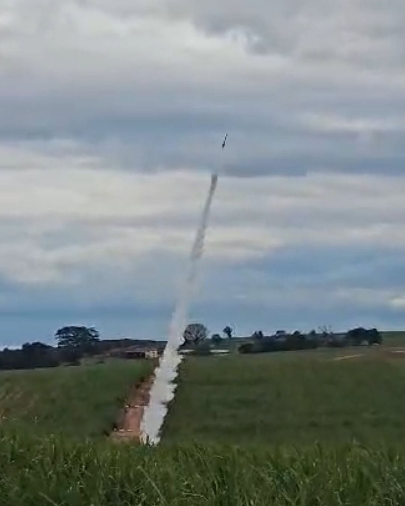

DESTAQUEVOID
Primeiro foguete SRAD completo da Vortex — propulsão, aerostrutura e aviônica todas in-house. Ejeção por gás frio CO₂ desenhada pela equipe. Dois CanSats como carga útil.
- Motor: SRAD K-class — Ø 6,35 cm × 51 cm — KNSB — ~1517 N·s
- Estrutura: fibra de vidro · ogiva Von Kármán · aletas Selig S1012 clipped delta
- Aviônica: Teensy 4.1 · BMP390 + MS5611 · MPU9250 · GPS BE-880 · LoRa RA-02
- Recuperação: dual-deploy — drogue 16" + principal 72" — ejeção CO₂ frio